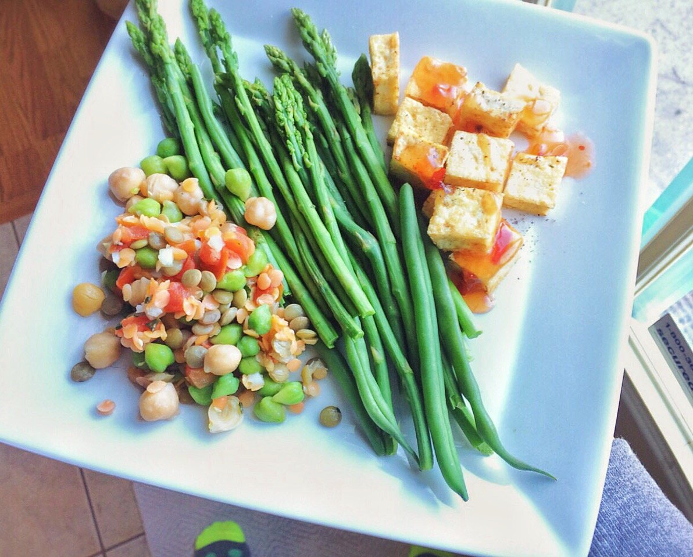

Sweet Chili Crispy Tofu
Look I made a savory!! I'm a proud lil squid. Why a squid, I'm not sure, but I feel like squids are proud lil guys.
This whole dinner took 10 minutes to make! Feels good, man. I stopped making varied dinners for the loongest time because I didn't feel like making each portion, you know what I mean? So dinner would be just 5 servings of broccoli, or zucchini sauteed, or just tofu, but never much variety hah. I'm finding ways to quicken the process again and yay it's fun.
This is crispy tofu with sweet chili sauce, asparagus & green beans, and a basil garbanzo/lentil mix. The asparagus & green beans are made by submerging in water & microwaving 2-3 minutes. The bean mixture is actually from a frozen bag! So similarly, you just microwave it. It was sooo good.
The sweet chili crispy tofu is the most tedious portion, but so worth it. I've finally found the best way (I prefer) to cook tofu, and I want to share! This may be the simplest recipe I've posted, but hey. Iz very important.
Not too terribly much has happened this week. I did meet a lot of really cool people at a friend's birthday party, so I guess that's rare ha. haha. ha. but really. I also posted a video of the custom fangs I had made! You can check that out if you're interested in getting any made for whatever reason, or just curious to see. I lub dem. 2016 is definitely my year of realizing like...be 100% you and never apologize for who you are. Then you'll be surrounded only by people who accept that and are good to your well-being. It feels great. Good lesson, 2016, thanks. Only a month in, too!
I've also learned so far: NEVER get a London Fog from Starbucks. I went last night and tried to get one. Okay wait back up. I went to a small coffee shop a month ago for a coffee. But the barista convinced me to try a London Fog. What is a London Fog? Well, it sounded odd to me at first: Earl Grey tea, steamed milk, and vanilla. But he said if I didn't like it he would make me something else so sure I'll try it. I got soy milk, sugar free syrup. And it was amaaaaazing. And thus...my obsession began. I started by trying to make it at home with almond milk. But the froth level just wasn't there. And I just dream about it. I went to a franchise starbucks 1 week ago when I was out of town, but they didn't even have that drink. SO I went last night. The barista convinced me to try coconut milk. And it was awful - watery and no froth. I'm like yo can I get a different drink... this is watery and off. And he's like oh yeah I hate coconut milk. WHAT? WHY DID YOU SUGGEST IT. Anyways. I just gave up and got a cafe misto. So now I sit here, still yearning for a London Fog with it's yummy frothy froth top. Sigh...

Sweet Chili Crispy Tofu
-
any portion of tofu you want (pictured is 1 serving - 3 oz)
-
salt & pepper to taste
-
Strain the tofu you want from all liquid. This step is probably the most important. You need to press the liquid out as much as possible. I go through several paper towels. You can choose to set something on top of the tofu, letting it strain for an hour or more, but I'm lazy and never think that far ahead. So press as much as possible before you cook it.
-
Cut into small cubes or strips - doesn't matter. I like cubes.
-
Spray a large pan with nonstick spray and cook on a low/medium heat. The sides will begin to lightly brown. Once it looks crispy to your liking, flip each piece individually, keeping track to make sure each one is indeed flipped.
-
Repeat this process for every single side. It is tedious, but worth it. Sometimes I just do 4 main edges and leave the other two.
-
Feel free to add salt and pepper while cooking - or any other spices!
-
Once finished, remove from the pan and top with sweet chili sauce, evenly coating the tofu. Enjoy!